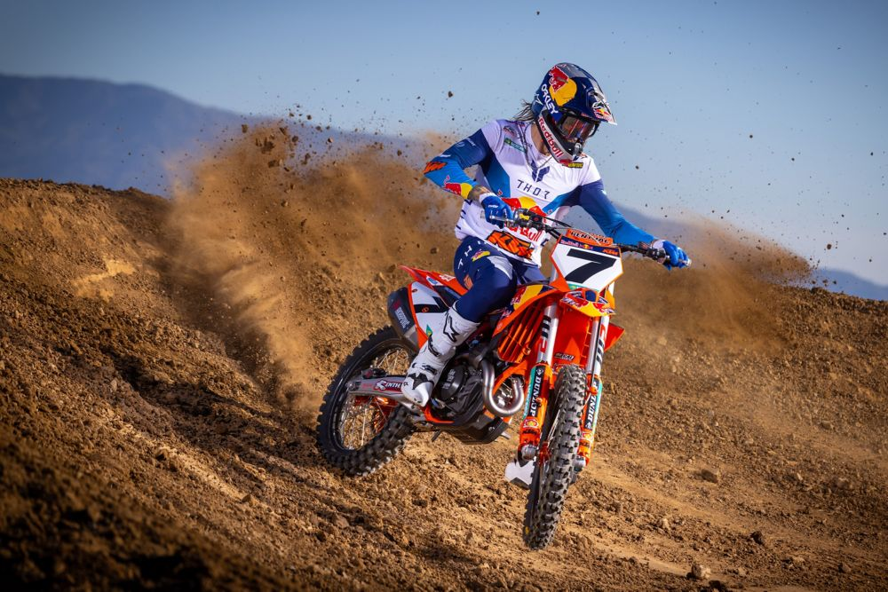
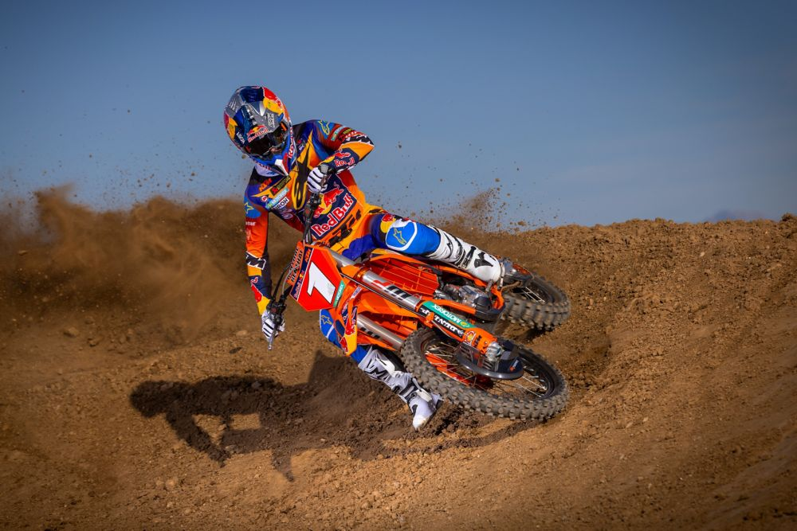
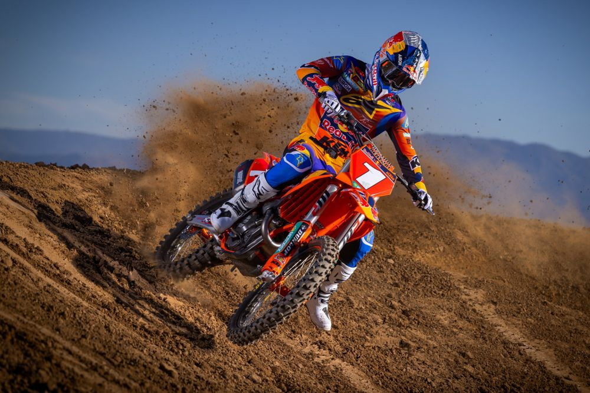
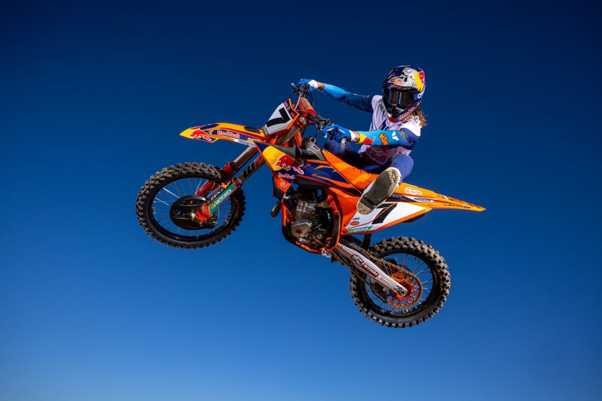

2025 KTM 450 SX-F and KTM 250 SX-F FACTORY EDITIONS are set to roll into start gates and will soon be leaving track rivals in their roost. The latest versions of KTM’s primed READY TO RACE machinery are the only pure competition-focused high-end options for riders who want - and need - to go that extra mile and at extra pace. In trusted KTM FACTORY EDITION style, the 2025 models boast the full Red Bull KTM Factory Racing trim in dedication to the three notable riders that will front the team and company’s push in 2025 AMA Supercross and Motocross series: Chase Sexton, Aaron Plessinger and Tom Vialle. The 2025 line-up carries the latest race look and graphics for the new season and with choices between #4 (Sexton) #7 (Plessinger) or #1 (Vialle) for the KTM 450 SX-F and KTM 250 SX-F FACTORY EDITIONs respectively. These bikes are the closest riders and fans can come to the Pros courtesy of a host of performance and practical KTM upgrades; the only separators will be the talent, fitness, and the hands on the throttles!
Both 2025 KTM FACTORY EDITIONs are based on the technical platform that has won world championships, a 250SX title, Grands Prix, Main Events and banked a host of podium trophies with a wide range of different athletes and riding styles. The 2025 creations will be the last KTM FACTORY EDITIONs of this current SX-F generation. The KTM FACTORY EDITIONs feature light, compact and advanced SOHC single cylinder mass centralized engines. Cylinder, cylinder head, piston and crankshaft development ensure resistant, smooth, torquey, and reliable power output with longer service intervals. The motor package for both models include an Akrapovič system, fully refined EMS and a 44 mm Keihin throttle body as well as Pankl Racing 5-speed gearboxes with quickshifter. The robot-wielded steel frames adhere to precise parameters of longitudinal and torsional flex for exceptional rider feedback, energy absorption, cornering confidence and straight-line stability for acceleration and braking.

The chassis benefits from the latest spec, fully adjustable WP XACT suspension (48 mm AER split air forks and 300 mm dual compression control tool-free rear shock with higher ground clearance for the linkage). The chassis hoists the 7.2 Liter (1.9 gallon) tank and also supports the carefully crafted rider triangle for ergonomics; permitting close control and grip of the bike in any condition and for a wide array of obstacles. Edge the competition with other features such as tool-less air filter access and maintenance marks for rapid servicing, engine mapping (plus traction control and launch control), a Connectivity Unit Offroad (to enable swift and easy engine personalization through the KTMConnect App), larger surface area footrests, and premium components like Brembo clutch and brakes, DID wheels, Neken handlebar technology, Dunlop GeoMax MX34 tires and more. The structure is light and orientated around the anti-squat concept for a distinctive and effective handling sensation, thanks also to the light aluminum subframe.


The 2025 KTM SX-F FACTORY EDITIONS will be rolling off the Austrian production line in December and will be available at authorized KTM dealers from January 2025.